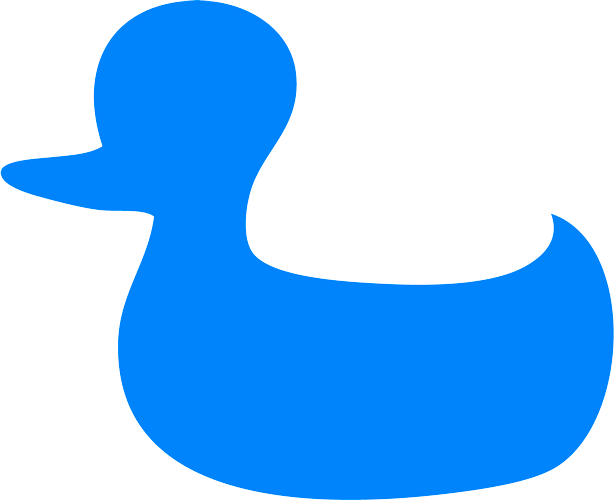

<ion-header>
    <ion-navbar>
        <ion-title>
            
        </ion-title>
    </ion-navbar>
</ion-header>

<ion-content padding>
    <ion-grid></ion-grid>
    <h2 text-center><b>Choisir une image de profil</b></h2>
    <p class="choose_profilpic">Vous avez un selfie préféré ? Téléchargez-le vite.</p>

    <ion-row>
        <ion-item class="userPic">
            <ion-avatar class="white">
                
            </ion-avatar>
        </ion-item>
    </ion-row>

    <div class="next_button">
        <a href="javascript:void(0)" (click)="noPhoto()">Passer pour le moment</a>
        <button class="next_button-btn" ion-button round (click)="addUserProfil()">Suivant</button>
    </div>
</ion-content>
